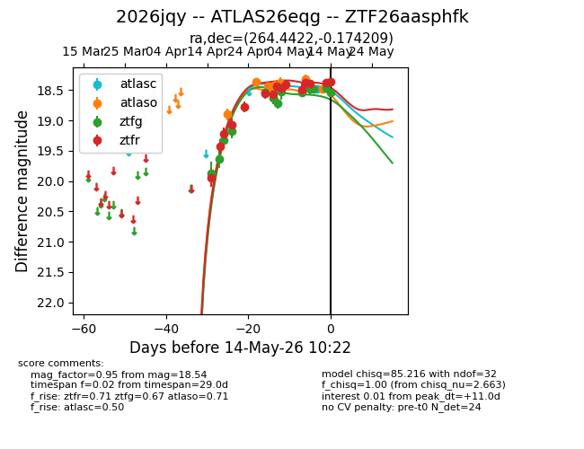
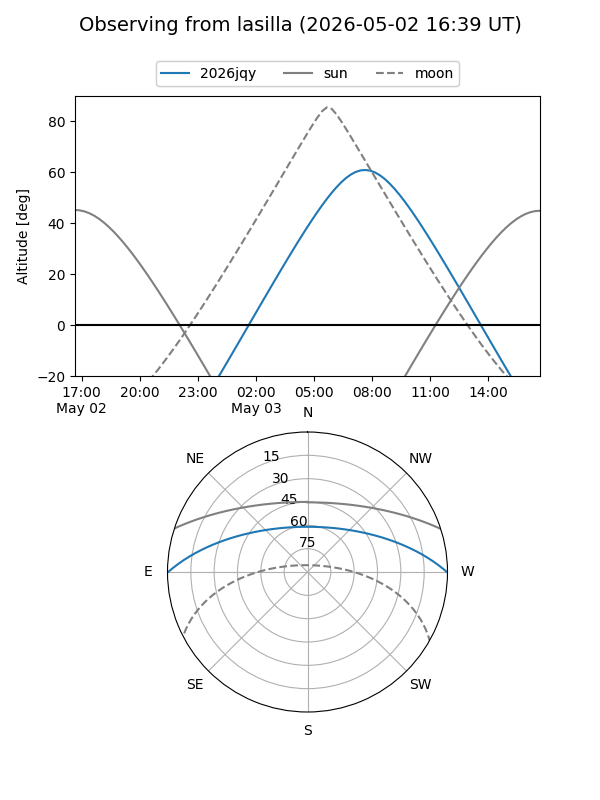
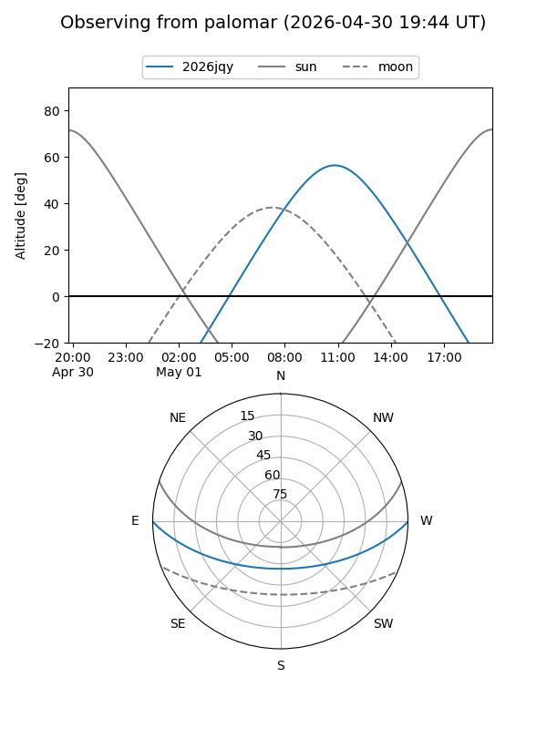
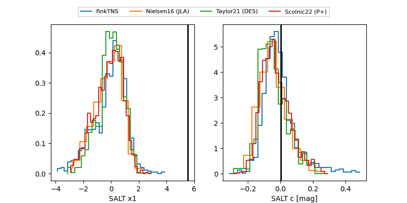

2026jqy
Target 2026jqy at 2026-05-14 10:25
Aliases and brokers:
FINK: link
Lasair: link
ALeRCE: link
TNS: link
YSE: link
alt names
ZTF26aasphfk (ztf,fink_ztf)
2026jqy (tns,yse)
ATLAS26eqg (atlas)
Coordinates:
equatorial (ra, dec) = 264.4422,-0.17421
equatorial (HMS+DMS) = 17:37:46.13,-00:10:27.15
galactic (l, b) = (24.1385,+16.24771)
Flags:
Photometry:
last atlasc=18.47, atlaso=18.49, ztfg=18.54, ztfr=18.37
1 atlasc, 8 atlaso, 13 ztfg, 15 ztfr detections
Lightcurve

Visibility


Additional plots
